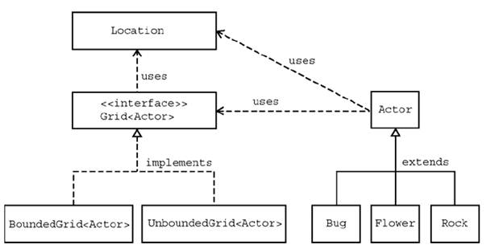

GridWorld
The College Board wants to test more than your knowledge of snippets of code; it want to see if you can bring them all together and apply them to a larger project. For this reason they've released a library of classes named GridWorld. Understanding GridWorld is 25% of the test. That's 10 multiple choice and 1 free response.
During this unit we are going to learn about each of the classes below:

Quick notes on GridWorld classes:
The Grid interface: A class that implements Grid ( BoundedGrid or UnboundedGrid ) is essentially a class with a 2D array as its instance field. Similar to ArrayLists, Grids are controlled using methods
Location: Simlar to the Point class, Location is used to encapsulate two ints together, row and column. The most important methods are getRow and getColumn, but there are some other methods such as getAdjacentLocatoin and getDirectionToward.
Actor is a class that is meant to be a super class. The Bug, Flower, and Rock classes all extend Actor. They override methods so that they act differently.
Installing GridWorld in BlueJ:
All of the GridWorld files are located in a jar that you may download HERE. Download them to a location that you will remember (Don't put it into a BlueJ project folder. Give it its own spot.
Now to set up BlueJ to be aware of the files packaged in gridworld.jar create a new project and select BlueJ -> Preferences from the menu. Click on the Libraries tab. Select Add and find the gridworld.jar file on your computer. Select it and hit create, then ok to close the window. You may need to restart BlueJ in order for the changes to take effect.